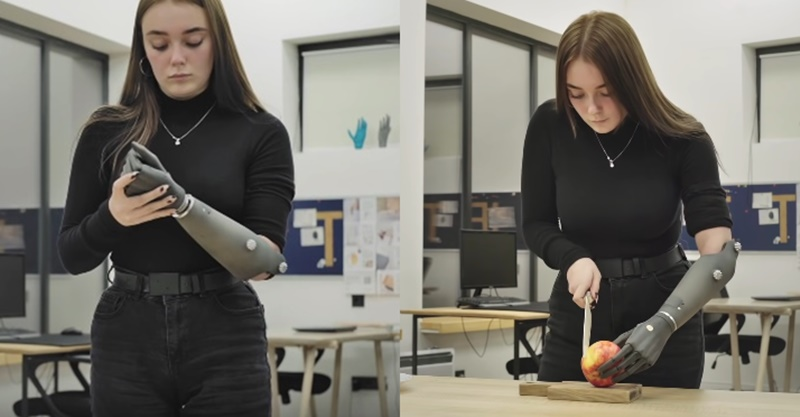

Штучний інтелект (artificial intelligence, AI) ― це метод змусити комп'ютер чи
програмне забезпечення «мислити»
як людський мозок. Це досягається шляхом вивчення закономірностей роботи людського мозку та аналізу
когнітивних
процесів. Результатом цих досліджень є розробка інтелектуального програмного забезпечення та систем.
Якщо ви коли-небудь користувалися сканером відбитків пальців, Face ID у телефоні та додатку Дія, друкували текст
з допомогою Т9, спілкувалися із чат-ботом у якомусь онлайн-магазині ― ви
взаємодіяли AI.
Ще приклади штучного інтелекту: ChatGPT, голосові помічники Siri чи
Alexa, система «Розумний будинок»
тощо.
Види штучного інтелекту
Чисто реактивні. Ці машини не мають пам'яті чи даних для роботи, спеціалізуються лише на
одній сфері діяльності. Наприклад, у шаховій грі машина спостерігає за ходами та приймає найкраще рішення,
щоб перемогти.
Обмежена пам'ять. Такі системи збирають попередні дані та продовжують додавати їх у свою
пам'ять. Мають достатньо пам'яті або досвіду, аби приймати правильні рішення, при цьому їхня пам'ять
мінімальна. Наприклад, така машина може запропонувати ресторан на основі зібраних відомостей про
місцезнаходження людини.
Теорія розуму. Цей тип ШІ розуміє думки та емоції, а також соціально взаємодіє.
Самосвідомий. Самосвідомі машини ― це майбутнє покоління нових технологій. Вони
будуть розумними, чутливими, свідомими.

Біонічний протез руки на основі технологій artificial intelligence — Esper Hand
«Створення AI може бути як найбільшим успіхом в історії нашої цивілізації, так і найгіршою подією. Ми
просто не знаємо. Невідомо, чи буде AI безкінечно допомагати нам, чи просто відсуне нас вбік, розвиваючись все
ширше, чи знищить нас»